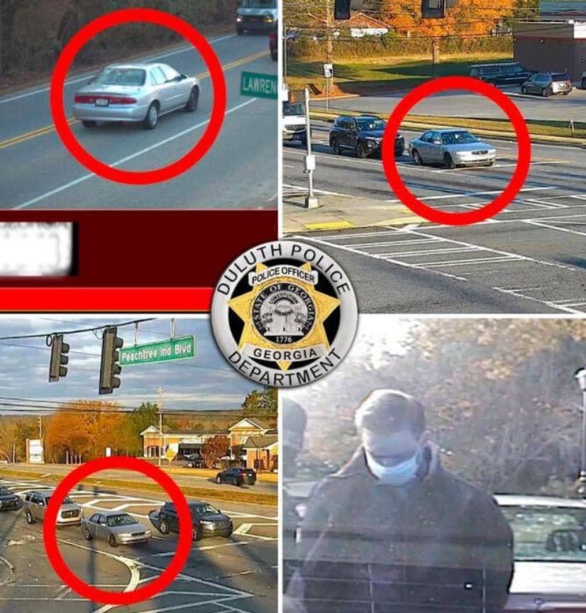
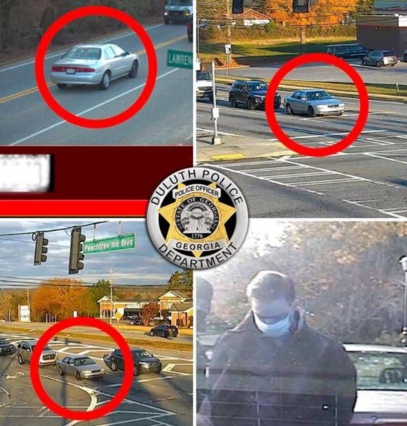

Prescription Vendor Pillpusher Pleads Guilty to Drug Charges
~3 min read | Published on 2021-08-06, tagged Darkweb-Vendor, Drug-Bust, Drugs, Pleaded-Guilty using 695 words.
A Georgia man pleaded guilty to distributing a wide variety of prescription drugs through the darkweb under the username “Pillpusher.”
Cullen Roberts, 23, of Duluth, Georgia, admitted using an account with the username “Pillpusher” on the now-defunct Yellow Brick Market to sell prescription drugs to users throughout the United States. Prosecutors wrote that he sold drugs through the account as early as April 2020.
Yellow Brick Market vanished and returned many times but finally disappeared for good in late 2020 or early 2021.
The Federal Bureau of Investigation (FBI) and Postal Inspection Service (USPIS) launched an investigation in July 2020 that resulted in the identification and arrest of Roberts. As part of the investigation, an FBI agent placed an order with Pillpusher for ten oxymorphone pills on August 5, 2020. The agent then provided the shipping address to a Postal Inspector at a Post Office in Cumming, Georgia. The FBI had reason to believe that Roberts had used the Cumming Post Office in the past. While conducting physical surveillance at the Post Office on August 6, the inspector saw a young man drop off a Priority Mail package. The package was addressed to the address provided to Pillpusher by the FBI.
On November 23, months after the FBI had placed the order, the FBI received the order at an address controlled by the Bureau. The package contained ten pills that tested positive for oxymorphone. At the time of the surveillance described above, Postal Inspectors had not recorded Roberts at the Post Office. Authorities installed surveillance cameras and later captured Roberts on camera as he dropped off packages. On August 14, 2020, the cameras captured a man dropping off a package who matched the appearance of the person first spotted by the Postal Inspector on August 6. The cameras also captured the suspect’s license plate.
A search of DMV records revealed that the license plate and vehicle were registered to Roberts. Throughout the investigation, undercover FBI agents purchased different prescriptions from Pillpusher on [Yellow Brick Marketplace]. The cameras installed at the Post Office repeatedly captured Roberts dropping off packages. In many cases, the packages were addressed to FBI-controlled addresses.
The investigators also conducted surveillance at Roberts’ residence. During surveillance on October 19, investigators collected garbage left outside of Roberts’ residence. Agents searched the trash and recovered empty boxes of oxycodone and Xanax pills. While conducting surveillance on October 22, investigators followed Roberts to the Post Office where he dropped off multiple packages. A postal inspector recovered eight packages addressed to locations throughout the U.S. Seven of the packages were Priority Mail Express packages and one was a Priority Mail package.
The investigators allowed the seven Priority Mail Express packages to get delivered but seized the Priority Mail one. They acquired a search warrant for the package and opened it on October 28. Investigators found 60 grams of an undisclosed number of white pills in a sealed plastic bag. One of the pills tested positive for tramadol.
During the investigation, investigators purchased and received a total of 34 Adderall pills, 100 oxycodone pills, 50 oxymorphone pills, and 10 Xanax pills. They purchased all of the pills from Pillpusher.<div class="ajw">DNL: Cameras installed throughout the city of Duluth captured pictures of Roberts’ car as he drove around the city. After the FBI had issued a warrant for Roberts’ arrest, the operator of the city-wide surveillance system helped law enforcement officers find Roberts by tracking his location through the camera system. The system reportedly identifies a car based on the physical appearance and license plate and is used to track suspects and locate stolen vehicles. Although this technology is likely used constantly by law enforcement, I have never seen the police come out and say it publicly in a darkweb case. As one might expect, though, this detail was revealed by the Duluth Police Department instead of the feds.

Law enforcement arrested Roberts on December 2, 2020. He was charged with the distribution of controlled substances. Roberts pleaded guilty to the charges on August 3, 2021. He will be sentenced on November 2. Roberts faces a maximum sentence of 20 years in prison.
Cullen Roberts, 23, of Duluth, Georgia, admitted using an account with the username “Pillpusher” on the now-defunct Yellow Brick Market to sell prescription drugs to users throughout the United States. Prosecutors wrote that he sold drugs through the account as early as April 2020.
Yellow Brick Market vanished and returned many times but finally disappeared for good in late 2020 or early 2021.
The Federal Bureau of Investigation (FBI) and Postal Inspection Service (USPIS) launched an investigation in July 2020 that resulted in the identification and arrest of Roberts. As part of the investigation, an FBI agent placed an order with Pillpusher for ten oxymorphone pills on August 5, 2020. The agent then provided the shipping address to a Postal Inspector at a Post Office in Cumming, Georgia. The FBI had reason to believe that Roberts had used the Cumming Post Office in the past. While conducting physical surveillance at the Post Office on August 6, the inspector saw a young man drop off a Priority Mail package. The package was addressed to the address provided to Pillpusher by the FBI.
On November 23, months after the FBI had placed the order, the FBI received the order at an address controlled by the Bureau. The package contained ten pills that tested positive for oxymorphone. At the time of the surveillance described above, Postal Inspectors had not recorded Roberts at the Post Office. Authorities installed surveillance cameras and later captured Roberts on camera as he dropped off packages. On August 14, 2020, the cameras captured a man dropping off a package who matched the appearance of the person first spotted by the Postal Inspector on August 6. The cameras also captured the suspect’s license plate.
A search of DMV records revealed that the license plate and vehicle were registered to Roberts. Throughout the investigation, undercover FBI agents purchased different prescriptions from Pillpusher on [Yellow Brick Marketplace]. The cameras installed at the Post Office repeatedly captured Roberts dropping off packages. In many cases, the packages were addressed to FBI-controlled addresses.
The investigators also conducted surveillance at Roberts’ residence. During surveillance on October 19, investigators collected garbage left outside of Roberts’ residence. Agents searched the trash and recovered empty boxes of oxycodone and Xanax pills. While conducting surveillance on October 22, investigators followed Roberts to the Post Office where he dropped off multiple packages. A postal inspector recovered eight packages addressed to locations throughout the U.S. Seven of the packages were Priority Mail Express packages and one was a Priority Mail package.
The investigators allowed the seven Priority Mail Express packages to get delivered but seized the Priority Mail one. They acquired a search warrant for the package and opened it on October 28. Investigators found 60 grams of an undisclosed number of white pills in a sealed plastic bag. One of the pills tested positive for tramadol.
During the investigation, investigators purchased and received a total of 34 Adderall pills, 100 oxycodone pills, 50 oxymorphone pills, and 10 Xanax pills. They purchased all of the pills from Pillpusher.<div class="ajw">DNL: Cameras installed throughout the city of Duluth captured pictures of Roberts’ car as he drove around the city. After the FBI had issued a warrant for Roberts’ arrest, the operator of the city-wide surveillance system helped law enforcement officers find Roberts by tracking his location through the camera system. The system reportedly identifies a car based on the physical appearance and license plate and is used to track suspects and locate stolen vehicles. Although this technology is likely used constantly by law enforcement, I have never seen the police come out and say it publicly in a darkweb case. As one might expect, though, this detail was revealed by the Duluth Police Department instead of the feds.

You can tell which car belonged to Roberts because the Duluth Police Department circled it in red.
Law enforcement arrested Roberts on December 2, 2020. He was charged with the distribution of controlled substances. Roberts pleaded guilty to the charges on August 3, 2021. He will be sentenced on November 2. Roberts faces a maximum sentence of 20 years in prison.